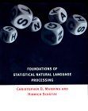
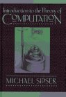

CMPT 413 - Spring 2003 - Computational Linguistics |
|
|
|
|
|
| Office: | ASB 10859 |
| Phone: | 291-4933 |
| Email: | anoop at cs.sfu.ca |
| Tuesday | 10:30a - 12:20p Room: AQ 3149 |
| Thursday | 10:30a - 11:20p Room: AQ 3005 |
| Teaching Assistant: | Rocky Zhang |
| TA Office Hours: | 3p to 5p: Monday and Wednesday Location: MTF109 North |
| Anoop's Office Hours: | Tuesday: 12:30-1:30p Thursday: 11:30-1:30p |
Computational Linguistics is the study of human language from a computational perspective. This course will examine algorithms used in the automatic analysis or production of language. Along with formal models of language, we will also study the engineering of natural language processing software. Many of the concepts, methods and algorithms studied are related to topics like formal linguistics, information retrieval, data mining from text, and bioinformatics. The course will also provide an introduction to programming with Perl. Assignments will develop expertise in Perl and provide exposure to commonly used datasets.For more details: Course Description for CMPT 413
Announcements |
Assignments |
Homework #4.
Distributed on Tue Mar 4, 2003. Due in class on Tue Mar 18, 2003.
Files for each question in the homework:
Homework #3. Distributed on Thu Feb 6, 2003. Due in class on Thu Feb 13, 2003.
Syllabus and Readings |
|
|
||||
|
|
||||
|
|
||||
|
|
||||
|
Review: Feb 13, 2003 Mid-term: Feb 18, 2003 Reading Break: Feb 20, 21 |
||||
|
|
||||
|
|
||||
|
|
||||
|
|
||||
|
|
||||
|
Final Review: Apr 3, 2003 Sample questions for final preparation |
Textbooks |
 |
Speech and Language Processing: An Introduction to Natural
Language Processing, Computational Linguistics, and Speech Recognition
by Daniel Jurafsky, James H. Martin. 934 pages 1 edition (January 26,
2000), Prentice Hall, ISBN: 0130950696 The book also has a webpage. In particular visit it for the Errata and the online Resources sections. |
 |
Programming Perl by Larry Wall, Brett McLaughlin, Jon Orwant.
400 pages 3 edition (August 30, 2000), O'Reilly & Associates, Inc.,
ISBN: 0596000278 While the book "Programming Perl" is not a reference book for this course, you might find it or an equivalent perl programming book invaluable when dealing with the homeworks which include programming assignments to be done in Perl. For my own use, I find "The Perl CD Bookshelf" published by O'Reilly to be quite a good deal: it contains 7 books on Perl (including this one) on one cdrom. There are many online Perl tutorials of varying quality. Links to some of them are provided in the Links section below. |
|  | Foundations of Statistical Natural Language Processing by
Christopher D. Manning, Hinrich Schutze. 680 pages 1 edition (1999),
M.I.T. Press/Triliteral, ISBN: 0262133601 This book will be useful in cases where you want a different presentation of the same material that is required reading from J&M. In many cases the statistical approaches are covered in a bit more detail in this book. However, it does not contain all the topics that we will cover in this course. |
|  | Introduction to the Theory of Computation by Michael Sipser. 480 pages (December 1996), PWS Pub. Co. ISBN: 053494728X |
| Mastering Regular Expressions, 2nd Edition by Jeffrey E. F.
Friedl. 484 pages. 2nd Edition July 2002, ISBN: 0-596-00289-0. This is a very useful book for help with advanced text processing techniques and using the full power of the regular expression library available in Perl. |
Policies |
| A+ |
95-100 |
B |
75-79 |
| A |
89-94 |
B- |
71-74 |
| A- |
85-88 |
C+ |
64-69 |
| B+ |
80-84 |
C- |
55-59 |
Links to Useful Software and Data |
Non-Technical References |
Courses in Computational Linguistics Elsewhere |